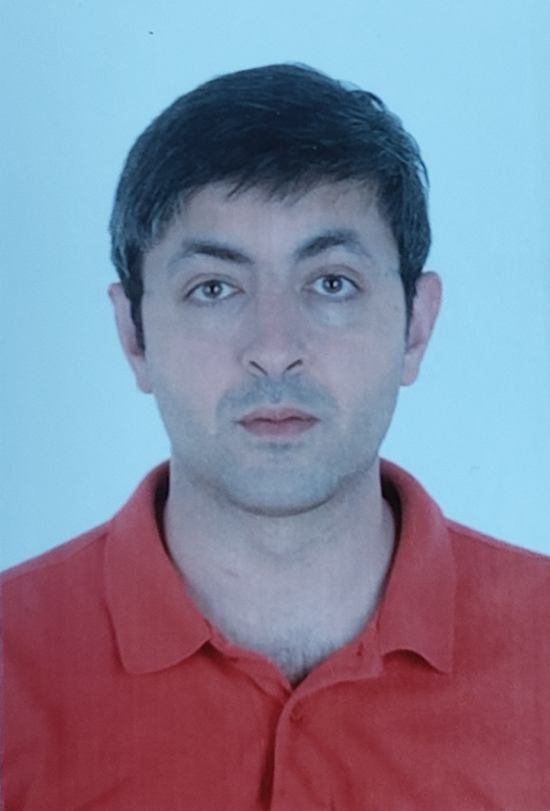

Resume of Abdelqader Ashour

Personal Information:-
Name: Abdelqader Ahmad A. Ashour.
Date and Place of Birth: 28.11.1983 in Kuwait.
Nationality: Jordanian
Mobile: +18067394836
Skype: Ashour_acted
Wechat: Ashour_abd
Address: Cixi, Ningbo, China
Email: ashour2616@gmail.com
Qualifications:-
- Three years in medicine faculty in Charles University in Prague- Czech Republic 2008 (unfinished).
- TESOL certificate.
Work Experience:-
1. Working as an English Teacher in Utrain language school in Voronezh - Russia from Sep 2015 to July 2018.
Giving General English and Business English lessons to individuals and groups of max. 12 students. The school’s website: www.utrain.ru
Working as an English Teacher in Field Education training center in Shishi, Quanzhou Aug 2018 – March 2020.
Currently working as an English teacher in Field Education training center since April 2020.
My Hobbies
Contact